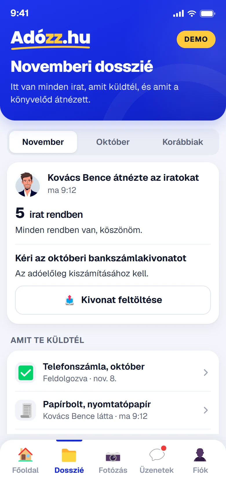
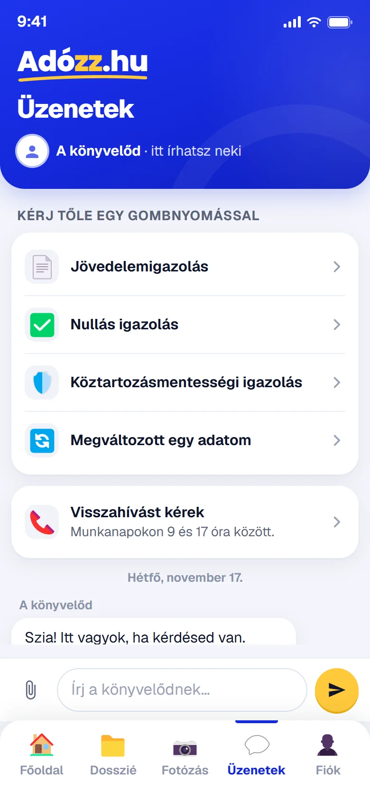
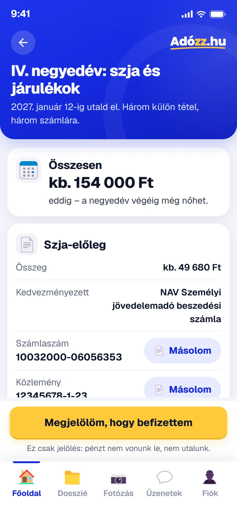

Online könyvelés egyéni vállalkozóknak
Saját könyvelő átalányadózóknak és katásoknak
Nyilvántartásba vett könyvelő intézi a bevallásaidat és a NAV-os ügyeidet. Te közben az appban látod, mennyit tegyél félre adóra, és mikor mit kell befizetned.
19 999 Ft/hó bruttó · éves zárás 14 999 Ft/év · a többi díj
Regisztrálni kártya nélkül tudsz. Hűségidő nincs.





Próbáld ki: koppintskattints a menüre
Röviden rólunk
Nyilvántartásba vett könyvelő
A neve a szerződésedben és az appban is ott van.
NAV-meghatalmazással
Az ONYA-n adod meg, és ugyanott bármikor visszavonhatod.
Európai szerveren
Az irataidat titkosítva tároljuk, és csak a könyvelőd látja őket.
Somosi Kft.
1123 Budapest, Nagyenyed utca 5. · Adószám: 32769678-2-43 · Cégadatok
Átalányadózó és katás egyéni vállalkozókat könyvelünk
Csak alanyi áfamentes vállalkozókkal dolgozunk. Ezért lehet mindenkinek ugyanaz az előre kiírt ár.
Neked szól, ha
- átalányadózó vagy katás egyéni vállalkozó vagy,
- alanyi áfamentes vagy,
- alkalmazottad vagy alkalmi munkásod is lehet: a bérszámfejtést felárért vállaljuk,
- vagy most indítod a vállalkozásodat. Ebben is segítünk.
Most nem neked szól, ha
- tételes költségelszámolással (vállalkozói szja-val) adózol,
- áfakörbe tartozol,
- Kft.-d vagy Bt.-d van.
Ha év közben ide kerülsz, szólunk, és megbeszéljük, mi legyen.
Így indul a könyvelésed
-
01
Regisztrálsz
Megadod az e-mail-címedet, és válaszolsz pár kérdésre a vállalkozásodról.
-
02
Szerződés és NAV-meghatalmazás
Elfogadod a szerződést, és a NAV-nál meghatalmazást adsz a könyvelődnek. Ezt ő is beküldheti, neked csak jóvá kell hagynod.
-
03
Átbeszéljük, ha szeretnéd
Az appban kérhetsz visszahívást, és a csapatunk mindent átbeszél veled. Fizetni csak utána kell, kártyával vagy átutalással.
-
04
Indul a könyvelés
A könyvelőd elkezdi a könyvelésedet. Innentől a számláid az appban vannak, és mindegyik mellett az is, mennyit tegyél félre.
Mindig látod, mennyit tegyél félre adóra
A számolást és a bevallást a könyvelőd csinálja helyetted.
-
Számlák
A kiállított számláid maguktól bejönnek
Az app a NAV Online Számla rendszeréből hozza be őket, nem kell begépelned. Minden számla mellett látod, nagyjából mennyit tegyél félre belőle adóra.

-
Félretenni
Egy szám mutatja, mennyit tegyél félre
A főoldalon látod, mennyit tegyél félre adóra és járulékra, és ez minden új számlával frissül. Ha félretetted, megjelölöd. A pénz közben nálad marad.
-
Határidők
Határidő előtt szólunk
Az appban ott az összeg, a NAV-számlaszám és a közlemény. Egy koppintással kimásolod őket a bankodba, az utalást te indítod. Katásként ugyanígy a havi katát.

-
Fotózás
A papírszámlát elég lefotóznod
A nyugtát vagy a kézzel írt számlát lefotózod, vagy feltöltöd PDF-ben. Egyenesen a könyvelődhöz kerül, nem kell papírt hordanod.
-
Dosszié
Amit küldesz, a könyvelőd átnézi
A havi dossziéban egy helyen van minden irat. Látod, mit nézett már át a könyvelőd, és mit kér még tőled.
-
Üzenetek
Bármikor írhatsz a könyvelődnek
Üzenetet küldesz neki az appban, igazolást pedig egy gombbal kérsz. Ha elakadsz, visszahívást is kérhetsz.

-
Keretek
Nem csúszol bele véletlenül az áfába
Az app mutatja, mennyit számlázhatsz még idén áfa nélkül, katásként a kata-keretedet is. Azt is látod, mennyi maradt neked az adók és járulékok után.

-
Gépen is
Gépen is ugyanez
Böngészőből is megnyitod, ugyanazzal a belépéssel. Ugyanazt látod, mint a telefonodon, és a papírokat a gépedről is feltöltheted.
Az app képei bemutató adatokkal készültek.
Ki könyvel neked?
Egy nyilvántartásba vett könyvelő. A neve és a nyilvántartási száma benne van a szerződésedben, és az appban is megtalálod.
A szerződést a Somosi Kft.-vel kötöd. A könyvelőd munkájáért a Somosi Kft. felel.
Ezt csinálja a könyvelőd egy negyedévben
- Minden hónapban
- Vezeti a bevételi nyilvántartásodat, és átnézi a számláidat. Ha valami hiányzik, szól. A bankszámlakivonatodat is elkéri, mert abból látja, mikor érkezett meg a pénz.
- A negyedév végén
- Kiszámolja és bevallja a negyedéves adódat és járulékaidat, és az appban megírja, mennyit utalj.
- Amikor utaltál
- A feltöltött kivonatodon látja, hogy megérkezett a befizetésed, és az appban jelzi neked.
- Ha NAV-levél jön
- Elmondja, mit jelent, és a meghatalmazásod alapján elintézi.
- Katásként
- A havi katát és a kata-keretedet is figyeli.
Mit jelent a meghatalmazás, és hol vannak az adataid?
A NAV-meghatalmazás
- Ezzel a könyvelőd a nevedben beadhatja a bevallásaidat, és intézheti az adóügyeidet a NAV-nál.
- A NAV online felületén (ONYA) adod meg. A könyvelőd is beküldheti, ilyenkor te hagyod jóvá.
- Bármikor visszavonhatod, ugyanott.
- Az app semmit nem küld be a NAV-nak. A bevallást a könyvelőd adja be, miután átnézte.
Az adataid
- Európai szerveren tároljuk őket, minden fájlt külön titkosítva.
- A könyvelési irataidat csak a könyvelőd látja.
- Nem adjuk el az adataidat, nem mutatunk hirdetést, és nincs követő süti.
- Bármikor letöltheted őket, és kérheted a törlésüket. Amit a törvény miatt meg kell őriznünk, azt a határidőig elzárva tartjuk.
Ha valaki a nevünkben keres
Telefonon soha nem kérjük el a kártyaadataidat, és sehol nem kérjük el a jelszavadat, az Ügyfélkapu+- vagy DÁP-belépésedet vagy a kódjaidat. Ha valaki a nevünkben mégis ilyet kér, tedd le, és írj nekünk: ugyfelszolgalat@adozz.hu
Mennyibe kerül?
A havidíjhoz évente egyszer jön hozzá az éves zárás. A többi díj is itt van lent. Ami egyedi, arra előre, írásban adunk ajánlatot.
Havidíj
19 999 Ft / hó
bruttó, 27% áfával
Egy teljes év az éves zárással együtt: 254 987 Ft
Benne van
- Saját, név szerint ismert könyvelő
- Bevételi nyilvántartás a NAV Online Számlából
- A negyedéves adó és járulékok kiszámítása és bevallása (szja-előleg, tb-járulék, szocho)
- Katásként: a havi kata és a kata-keret figyelése
- Mennyit tegyél félre, számlánként
- Határidő-figyelés és emlékeztetők
- NAV-ügyek meghatalmazással, NAV-levelek értelmezése
- Igazolások kérése
- Üzenetek a könyvelődnek, visszahívás igény szerint
- Ha most indulsz: segítség a vállalkozásod elindításához
Regisztrálni kártya nélkül tudsz.
Külön díjak
Az éves zárást akkor fizeted, ha az éves bevallásodat mi adjuk be. A többi díj csak akkor jár, ha te kéred a munkát. Mindet előre látod az appban, és a jóváhagyásod nélkül nem kérjük.
- Éves zárás évente egyszerAz éves adóbevallások: szja vagy kata, és iparűzési adó.
- 14 999 Ft/ év
- Változás bejelentése helyettedKöltözés, új tevékenység, telephely. Ha magad jelented be az útmutatónkkal: 0 Ft.
- 4 999 Ft/ alkalom
- Jogállás-változás bejelentése helyettedHa főállásból mellékállásba váltasz, vagy fordítva.
- 7 999 Ft/ alkalom
- Amíg szünetel a vállalkozásodIlyenkor a havidíj helyett csak ennyit fizetsz.
- 2 999 Ft/ hó
- A vállalkozásod megszüntetése helyettedHa magad jelented be az útmutatónkkal: 0 Ft.
- 7 999 Ft/ alkalom
- BérszámfejtésHa alkalmazottat vagy alkalmi munkást foglalkoztatsz.
- egyedi ajánlat
Szintén egyedi ajánlattal, előre és írásban: áfabevallás, képviselet NAV-ellenőrzésnél, korábbi évek rendbetétele.
Havonta előre fizetsz, kártyával vagy átutalással. Hűségidő nincs: ha lemondod, a kifizetett hónap végéig minden működik. Minden ár bruttó, 27% áfával, a részleteket az ÁSZF-ben találod.
Miben más, mint egy hagyományos könyvelőiroda?
Ha személyesen szeretnél leülni a könyvelőddel, egy hagyományos iroda jobb neked. Ha inkább a telefonodról intéznéd, nézd meg, miben más nálunk.
| Szempont | Adózz | Hagyományos iroda |
|---|---|---|
| Ár | 19 999 Ft/hó bruttó, a díjak kiírva ezen az oldalon | Irodánként eltér, sokszor egyedi ajánlat alapján |
| Könyvelő | Nyilvántartásba vett könyvelő, név szerint | Nyilvántartásba vett könyvelő |
| Mennyit tegyél félre | Az appban, számlánként, folyamatosan látod | Általában akkor tudod meg, amikor a könyvelő kiszámolja |
| Iratok | A kiállított számláid a NAV Online Számlából jönnek, a többit lefotózod | Irodánként eltér: papíron, e-mailben vagy online |
| Kapcsolat | Üzenet az appban és visszahívás | E-mail, telefon, sokszor személyesen is |
| Személyes találkozó | Nincs, minden online megy | Általában lehetséges |
| Hűségidő | Nincs, bármikor lemondhatod | Szerződéstől függ |
A hagyományos irodák gyakorlata eltérő. A jobb oszlop általános tapasztalatot mutat, nem egy konkrét irodát.
Gyakori kérdések
Nem találod a választ? Írj nekünk: ugyfelszolgalat@adozz.hu
Kinek szól az Adózz?
Magyarországon nyilvántartott, alanyi áfamentes egyéni vállalkozóknak, akik átalányadóval vagy katával adóznak. Ha alkalmazottad vagy alkalmi munkásod is van, a bérszámfejtést felárért, egyedi ajánlat alapján vállaljuk. Ha év közben megváltozik az adózásod, vagy elveszíted az áfamentességet, szólunk, és együtt megnézzük, mi a teendő.
Katás vagyok. Nekem is jó?
Igen, ugyanennyiért. Az app figyeli a kata-keretedet, és szól, ha cégnek számlázol, mert ha egy cég fizet neked, megszűnhet a katád. Ha át kell állnod átalányadóra, ebben is segítünk.
Mi van benne a havidíjban, és mi kerül külön?
A havidíjban benne van a könyvelőd munkája, a negyedéves bevallások, a határidők figyelése, az igazolások kérése és az app minden funkciója. Külön díjas az éves zárás (évente egyszer), a helyetted intézett változás vagy megszüntetés, és a szünetelés idejére járó kisebb díj. A pontos lista az Árak résznél van.
Az adót is ti fizetitek be?
Nem, az utalást mindig te indítod, a saját bankodból. Mi megmondjuk, mennyit, mikorra és melyik NAV-számlára utalj. A számládról pénzt nem vonunk le.
Mi az a NAV-meghatalmazás, és visszavonható?
Ezzel a könyvelőd a nevedben adhatja be a bevallásaidat, és intézheti az adóügyeidet a NAV-nál. A NAV online felületén (ONYA) adod meg, vagy a könyvelőd küldi be, és te jóváhagyod. Ugyanott bármikor visszavonhatod. A belépési adataidat ehhez sem kérjük el.
Hol vannak az adataim, és ki látja őket?
Európai szerveren, titkosítva. A könyvelési irataidat csak a könyvelőd látja. Ügyfélszolgálatunk csak azt látja, ami az induláshoz és a visszahíváshoz kell. Az adataidat nem adjuk el. Részletek az Adatkezelési tájékoztatóban.
Miért nincs próbaidő? Mikor kell fizetni?
A havidíjért egy könyvelő dolgozik a vállalkozásodon, ezért ingyenes időszakot nem tudunk adni. Regisztrálni kártya nélkül tudsz. Ha szeretnéd, előbb visszahívunk, átbeszélünk mindent, és csak utána fizetsz, kártyával vagy átutalással.
Hogyan mondhatom fel?
Bármikor, az appban (Fiók > Előfizetés > Lemondás) vagy e-mailben. A lemondás a kifizetett hónap végén lép életbe, addig minden ugyanúgy működik, utána több díjat nem kérünk.
Mi kell az induláshoz?
Egy e-mail-cím, a vállalkozásod adatai, egy személyazonosító okmány (a törvény előírja, hogy azonosítsuk az ügyfeleinket), és Ügyfélkapu+ vagy DÁP, hogy megadd vagy jóváhagyd a NAV-meghatalmazást.
Még nincs vállalkozásom. Segítetek elindítani?
Igen. Olyan útmutatót kapsz, ami a te helyzetedre szól, képekkel és videóval. A bejelentést te küldöd be, és mi átnézzük a NAV-os értesítést. Ha elakadsz, 2026 végéig kérheted, hogy a könyvelőd intézze helyetted, meghatalmazottként (2027-től a nyilvántartást a gazdasági kamara vezeti). Ez is benne van a havidíjban.
Legyen saját könyvelőd
Regisztrálj, és válaszolj pár kérdésre a vállalkozásodról.
RegisztrálokHavi 19 999 Ft bruttó, hűségidő nélkül.
Előbb beszélnél velünk?
Regisztráció után az appban kérhetsz visszahívást. A csapatunk 24–48 órán belül visszahív, munkanapokon 9 és 17 óra között. A visszahívás ingyenes, és nem kötelező.
Kérdésed van a regisztráció előtt? Írj nekünk: ugyfelszolgalat@adozz.hu